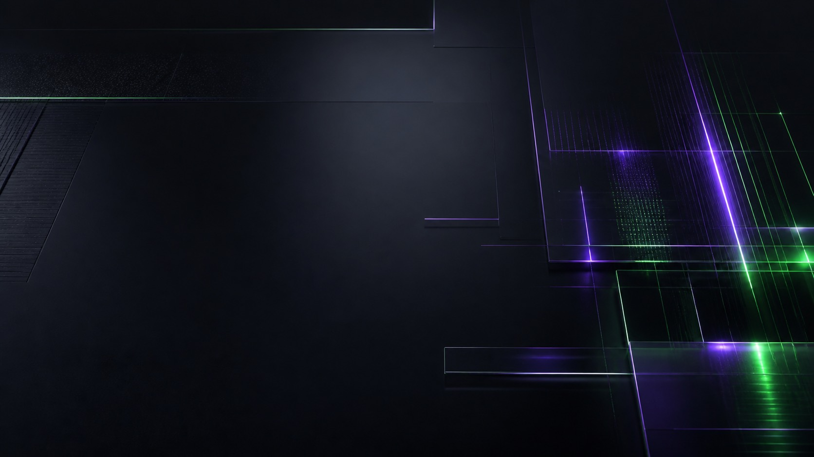

AI-продукт / 2026
Local Agent Gateway
Помогает AI-помощнику работать с программами на вашем компьютере и сохранять результат, если связь оборвалась
Открыть демонстрацию
Сергей Гостов · AI-инженер
Собираю AI-продукты и проверяю, что они выдерживают реальные сценарии. Здесь можно открыть результат, а не только прочитать обещание

Избранные работы
Помогает AI-помощнику работать с программами на вашем компьютере и сохранять результат, если связь оборвалась
Открыть демонстрацию

Отвечает по утверждённой базе знаний и ведёт человека к записи
Открыть MVP-демо
Редактор метаданных фотографий. Можно попробовать прямо в браузере
Открыть редакторИгры
Портфолио Сергея Гостова
AI-инженерия, игры и истории. От первого сценария до вещи, которую можно открыть, проверить и почувствовать
Исследовать работы↘
СИГНАЛ / МЕЖДУ ЗАМЫСЛОМ И РЕЗУЛЬТАТОМРабота
Помощник, который работает на вашем компьютере и не теряет задачу при обрыве связи
Демонстрация ↗
Сергей Гостов / AI-инженер и создатель игр
Работа